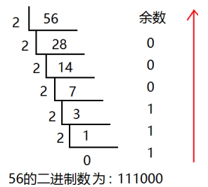

进制
- TAGS: Assembly
进制
电子计算机，顾名思义，就是计算的机器。 因此，学习汇编语言，就不可避免地要和数字打交道。在这个过程中，我们要用到三种数制：十进制、二进制、十六进制。我们的目标是：
- 熟透后两种数制，了解这两种数制的计数特点
- 能够在这三种数制之间熟练地进行转换，特别是在看到一个二进制数时，能够口算出它对应的十六进制数，反之亦然。
- 对于 0~15 之间的任何一个十进制数，能够立即说出它对应的进制数和十六进制数。
进制也就是进位制，是人们规定的一种进位方法。 对于任何一种进制—X进制，就表示某一位置上的数运算时是逢X进一位。 十进制是逢十进一，十六进制是逢十六进一，二进制就是逢二进一，以此类推，x进制就是逢x进位。
二进制计数法
关于二进制计数法
二进制逢二进一，所有的数组是0、1组成
当前的计算机系统使用的基本上是二进制系统，它的基数为2， 数据在计算机中主要是
以补码的形式存储的 。
我们计算机也是一台机器，机器在做数学题是，也面临着一个如何表示数字的问题，比如你采用什么办法来将加数和被加数送到机器里。
答案是， 用高、低两种电平的组合来表示数字 。参与计算的数字通过电线送往计算机器，高电平被认为是“1”，低电平被认为是“0”，这样就形成了一个“0”和“1”组成的序列，如“11111010”，这就是一个二进制数，在数值上等于我们所熟知的十进制数 250。
从数学角度看，二进制计数法是现代主流计算机的基础。
- 简化了硬件设计，因为它只有两个符号“0”和“1”，要得到它们，用最少的电路元件来接通或者判断电路就行了。
- 二进制与十进制有着一对一的关系，任何一个十进制数都对应一个二进制，不管它有多大。
组成二进制数的每个数位，称为一个 比特(bit) ，而一个二进制数也可以看成一个比特串。很明显，它的数值越大，这个比特串说越长，这是二进制计数法不好的一面。
1、一个字节 = 8位（8个二进制位） 1Byte = 8bit； 2、一个十六进制 = 4个二进制位 3、一个字节 = 2个十六进制
口诀 ：
- 2^0=1=1b
- 2^1=2=10b
- 2^3=8=1000b
- 2^4=16=10000b
- 2^5=32=100000b
- 2^6=64=1000000b
- 2^7=128=10000000b
- 2^8=256=100000000b
- 2^9=512=1000000000b
- 2^10=1024=10000000000b
- 2^11=2048=100000000000b
- 2^12=4096=1000000000000b
8421法则 ： 将二进制的每一位数用相对就的 8、4、2、1 来表示，再通过“数字 ”相加就可以得到二进制数的数据
8 1000
4 100
2 10
1 1
1000
100
10
1
--------
1 1 1 1
1 位数：如果是该数本身
2 位数：如果都有值是2+1
3 位数：如果都有值是4+2+1
4 位数：如果有值是8+4+2+1
二进制到十进制转换
每种计数法都有自己的符号（数符）：
- 十进制：0、1、2、3、4、5、6、7、8、9
- 二进制：0、1
- 十进制：0、1、2、3、4、5、6、7、8、9、a、b、c、d、e、f
这些 数字符号的个数称为基数 。也就是说十进制有 10 个基数，而二进制只有两个。
二进制和十都是进位计数法。进位计数法一个特点是，符号的值和它在这个数中所处的位置有关。
范例：十进制 365
\begin{equation*} 百位 3、十位 5、个位 6 = 3 \times 10^2 + 5 \times 10^1 + 6 \times 10^0 = 365 \end{equation*}
这就是说，由于所处位置不同，每个数位都有一个不同的放大倍数，这称为“ 权 ”。每个数位的权是这个计算的（仅讨论整数）： 从右往左开始，以基数为底，指数从 0 开始递增的幂 。
二进制转化为十进制
权值法：将2进制各个位数从0位开始乘以2的N次幂，将各个位数的结果相加。N代表位数
将上面的算式是把 十进制数“翻译”成十进制数。推广一下，将二进制数转换成十进制数。
范例： 10110001B
\begin{equation*} 10110001B = 1 \times 2^7 + 0 \times 2^6 + 1 \times 2^5 + 1 \times 2^4 + 0 \times 2^3 + 0 \times 2^2 + 0 \times 2^1 + 1 \times 2^0 = 177D \end{equation*}上面公式里，10110001B 中 B(Binary) 表示这是个二进制数，D(Decimal) 表示 177 是十进制数。
十进制到二进制的转换
除2反序取余法：用十进制数除以2，分别取余数和商数，商数为0的时候，将余数倒着数就是转化后的结果。
将它不停地除以二进制的基数 2，直到商为 0，然后将每一步得到的余数串连起来即可。

十进制的小数转换成二进制
小数部分和2相乘，取整数，不足1取0， 每次相乘都是小数部分 ，小数部分有几位就需几位。顺序看取整后的数就是转化后的结果。
如0.432只有3位，故只需3位。

- 乘的时候只乘小数部分
- 0.432 只有 3 位，故只需 3 位
- 0.432 的二进制数为：0.011
十六进制计数法
十六进制逢十六进一，所有的数组是0到9和A到F组成 字母不区分大小写
十六进制（英文名称：Hexadecimal），同我们日常生活中的表示法不一样，它由0-9，A-F组成， 字母不区分大小写 。与10进制的对应关系是：0-9对应0-9，A-F对应10-15。
十进制转化十六进制
除十六反序取余法: 用十进制数除以16，分别取余数和商数，商数为0的时候，将余数倒着数就是转化后的结果。
十六进制转化为十进制
权值法：
如 7 C 3
- 第 0 位： \(3 \times 16^0 = 3\)
- 第 1 位： \(12 \times 16^1 = 12 \times 16 = 192\)
- 第 2 位： \(7 \times 16^2 = 1792\)
- 1792 + 192 + 3 = 1987
十六进制的数和二进制数可以按位对应（ 十六进制一位对应二进制四位 ），因此常应用在计算机语言中。
0101 0111 1010 1011 0101 0111 1101 0111 000 5 7 A B 5 7 D 7 0
十六进制转二进制
A B 4 2 D 1010 1011 0100 0010 1101
8421法则： 将各个位数的二进制用十进制中的【数字 】来表示多位的二进制数 通过【数字 】相加就可以得到二进制数的数据
8 1000
4 100
2 10
1 1
1000
100
10
1
————
1 1 1 1
八进制
八进制逢八进一，所有的数组是0到7组成
八进制，Octal，缩写OCT或O，一种以8为基数的计数法，采用0，1，2，3，4，5，6，7八个数字，逢八进1。一些编程语言中常常以数字0开始表明该数字是八进制。
十进制转化八进制的方法 :
除八反序取余法： 用十进制数除以8，分别取余数和商数，商数为0的时候，将余数倒着数就是转化后的结果。
八进制转十进制 :
权值法：将8进制各个位数从0位开始乘以8的N次幂，将各个位数的结果相加。N代表位数
3703 第0位： 3*8^0 = 3 第1位： 0*8^1 = 0 第2位： 7*8^2 = 448 第3位： 3*8^3 = 1536 1536+448+3 =1987
8进制与2进制互转
八进制的数和二进制数可以按位对应（ 八进制一位对应二进制三位 ），因此常应用在计算机语言中。
# 二进制转 8 进制 101 001 101 111 011 5 1 5 7 3 # 8 进制转二进制 1 2 5 4 7 001 010 101 100 111
八四二一法则 ：将二进制的每一位数用相对就的 8、4、2、1 来表示
- 1 位数：如果是该数本身
- 2 位数：如果都有值是2+1
- 3 位数：如果都有值是4+2+1
- 4 位数：如果有值是8+4+2+1
计算机内存数值存储方式
原码
一个数的原码(原始的二进制码)有如下特点：
- 最高位做为符号位，0表示正,为1表示负
- 其它数值部分就是数值本身绝对值的二进制数
- 负数的原码是在其绝对值的基础上，最高位变为1
下面数值以1字节的大小描述：
十进制数 原码 +15 0000 1111 -15 1000 1111 +0 0000 0000 -0 1000 0000
原码表示法简单易懂，与带符号数本身转换方便，只要符号还原即可，但当两个正数相减或不同符号数相加时，必须比较两个数哪个绝对值大，才能决定谁减谁，才能确定结果是正还是负，所以原码不便于加减运算。
反码
- 对于正数，反码与原码相同
- 对于负数，符号位不变，其它部分取反(1变0,0变1)
十进制数 反码 +15 0000 1111 -15 1111 0000 +0 0000 0000 -0 1111 1111
反码运算也不方便，通常用来作为求补码的中间过渡。
补码
在计算机系统中，数值一律用补码来存储
补码特点：
- 对于正数，原码、反码、补码相同
- 对于负数，其补码为它的反码加1
- 补码符号位不动，其他位求反，最后整个数加1，得到原码
十进制数 补码 +15 0000 1111 -15 1111 0001 +0 0000 0000 -0 0000 0000
#include <stdio.h> int main() { int a = -15; printf("%x\n", a); //结果为 fffffff1 //fffffff1对应的二进制：1111 1111 1111 1111 1111 1111 1111 0001 //符号位不变，其它取反：1000 0000 0000 0000 0000 0000 0000 1110 //上面加1：1000 0000 0000 0000 0000 0000 0000 1111 最高位1代表负数，就是-15 return 0; }
补码的意义
示例1：用8位二进制数分别表示+0和-0
十进制数 原码 +0 0000 0000 -0 1000 0000 十进制数 反码 +0 0000 0000 -0 1111 1111
不管以原码方式存储，还是以反码方式存储，0也有两种表示形式。为什么同样一个0有两种不同的表示方法呢？
但是如果以补码方式存储，补码统一了零的编码：
十进制数 补码 +0 0000 0000 -0 10000 0000由于只用8位描述，最高位1丢弃，变为0000 0000
示例2：计算9-6的结果
以原码方式相加：
十进制数 原码
9 0000 1001
-6 1000 0110
-------------
1000 1111
以补码方式相加
十进制数 补码 9 0000 1001 -6 1111 1010 ------------- 10000 0011
最高位的1溢出,剩余8位二进制表示的是3，正确。
在计算机系统中，数值一律用补码来存储 ，主要原因是：
- 统一了零的编码
- 将符号位和其它位统一处理
- 将减法运算转变为加法运算
- 两个用补码表示的数相加时，如果最高位(符号位)有进位，则进位被舍弃
一个有符号的整型数据可以分为两部分一部分是符号位(在最高位)、一部分是数字位
无符号数据类型只包含数字位部分
signed int a= 1986（有符号标识 signed可以不用写）
二进制：11111000010
1986原码：0000 0000 0000 0000 0000 0111 1100 0010 -1986原码：1000 0000 0000 0000 0000 0111 1100 0010 1986反码： 0000 0000 0000 0000 0000 0111 1100 0010 -1986反码：1111 1111 1111 1111 1111 1000 0011 1101 1986补码： 0000 0000 0000 0000 0000 0111 1100 0010 -1986补码：1111 1111 1111 1111 1111 1000 0011 1110 1986 +( -1986)的结果：1 0000 0000 0000 0000 0000 0000 0000 0000
溢出 ：在数据进行操作的时候会导致超出数据类型大小，会向前位进1，多于原始数据类型大小，会被系统自动舍弃 保留从后面开始数据类型大小的位数
10+20
0000 1010
0001 0100
0001 1110
-10+-20
-10的补码：
原码：1000 1010
反码：1111 0101
补码：1111 0110
-20的补码：
原码：1001 0100
反码：1110 1011
补码：1110 1100
-10+-20相加：
1111 0110
1110 1100
补码：1110 0010
反码：1110 0001
原码：1001 1110 16+8+4+2=-30
练习：
用生辰年份年去生辰日期 1992 -326 1、将10进制转化为二进制 1992 ：0000 0000 0000 0000 0000 0111 1100 1000 -326 ：0000 0000 0000 0000 0000 0001 0100 0110 2、加符号位将数据变为原码 1992 ：0000 0000 0000 0000 0000 0111 1100 1000 -326 ：1000 0000 0000 0000 0000 0001 0100 0110 3、转化为反码 1992 ：0000 0000 0000 0000 0000 0111 1100 1000 -326 ：1111 1111 1111 1111 1111 1110 1011 1001 4、将反码+1转化为补码 1992 ：0000 0000 0000 0000 0000 0111 1100 1000 -326 ：1111 1111 1111 1111 1111 1110 1011 1010 5、计算补码 1992 ：0000 0000 0000 0000 0000 0111 1100 1000 326 ：1111 1111 1111 1111 1111 1110 1011 1010 结果 : 1 0000 0000 0000 0000 0000 0110 1000 0010 6、将数据转化为10进制 110 1000 0010 2+128+512+1024 = 1666